A ladder of known length, or a ramp whose sloping length is known: often the longest side is the one you are given. Then the theorem is run backwards.
By the end you’ll know…
Rearranging a² + b² = c² for a shorter side gives a² = c² - b², so the two squares are SUBTRACTED, not added.
Which of the two operations is needed is decided by whether the unknown side is the hypotenuse or one of the shorter sides.
A shorter side must come out smaller than the hypotenuse, and that is the check on the answer.
By the end you can
G5Calculate a shorter side of a right-angled triangle from the hypotenuse and the other shorter side.
G5Decide whether a triangle with three given side lengths is right-angled by testing whether a² + b² = c².
Work down the page at your own pace. Write every answer in your book first, then click to check it.
01
Do Now
About 5 minutes
1
Work out 13 squared, and the square root of 144.
169 and 12
2
Make r the subject of A = 4r².
A4 = r² r = √(A4)
3
The shorter sides of a right-angled triangle are 12 cm and 16 cm. Find the hypotenuse.
c² = 144 + 256 = 400 c = √400 = 20 cm
Remember these?
LAST LESSONWhich side of a right-angled triangle is always the longest?
The hypotenuse, opposite the right angle
LAST WEEKI think of a number, double it and add 9 to get 31: find the number.
2n + 9 = 31 n = 11
LAST TERMWork out 3.6 × 10³.
3600
LAST YEARHow many faces, edges and vertices does a cuboid have?
6 faces, 12 edges and 8 vertices
02
Learn
Read each card, then follow the worked examples one step at a time.
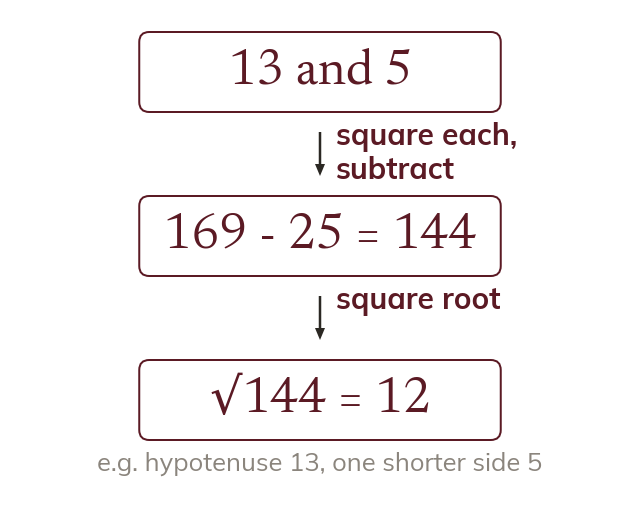
When the hypotenuse is known
With the hypotenuse known, subtract squares: a² = c² - b². The squares are subtracted, not added.
If the hypotenuse is known, a shorter side is found by subtracting squares: a² = c² - b². The squares are subtracted, not added.
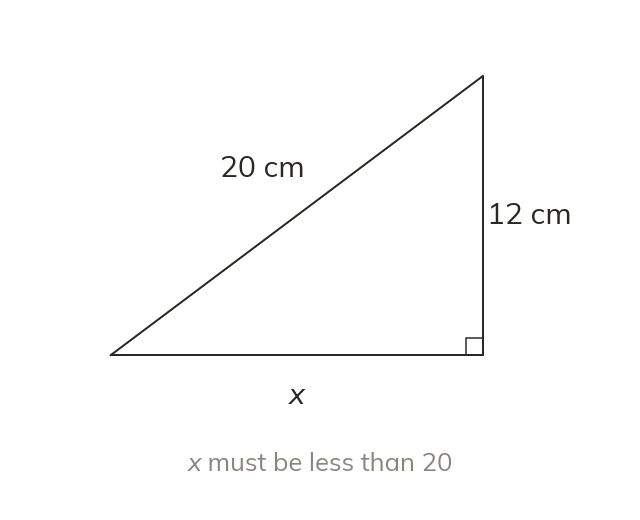
Decide first, then check
Find the hypotenuse first, to decide whether to add or subtract. A shorter side must come out smaller than the hypotenuse.
WORKED EXAMPLE A
The hypotenuse is 10 cm and one shorter side is 6 cm. Find the other side.
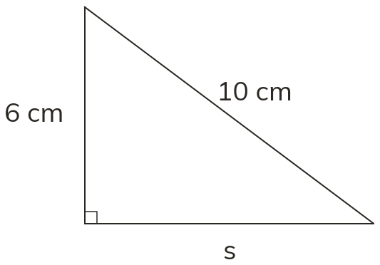
Subtract the squaress² = 10² - 6²
Square eachs² = 100 - 36
s² = 64
Square roots = √64
Other sides = 8 cm
WORKED EXAMPLE B
The hypotenuse is 12 cm and one shorter side is 7 cm. Find the other side to 1 d.p.
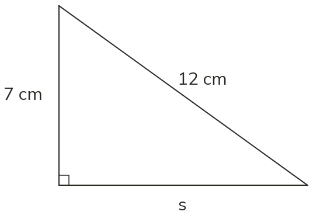
Subtract the squaress² = 12² - 7²
Square eachs² = 144 - 49
s² = 95
Square roots = 9.746...
Round to 1 d.p.s = 9.7 cm
YOUR TURN · a
The hypotenuse is 17 cm and one shorter side is 8 cm. Find the other side.
289 - 64 = 225, √225 = 15 cm
YOUR TURN · b
The hypotenuse is 9.5 cm and one shorter side is 6 cm. Find the other side to 1 d.p.
90.25 - 36 = 54.25, √54.25 = 7.365..., so 7.4 cm
03
Check your understanding
Pick an answer. If it's wrong, the feedback tells you which mistake it was.
Which calculation finds the missing side?
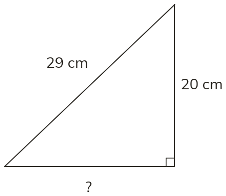
Not quite. You know the hypotenuse, so subtract: 29² − 20².
Not quite. Square first, then subtract: 29² − 20².
Yes. Hypotenuse squared minus the other side squared, then square root.
Not quite. That's the side squared. One more step: square root.
Find s.
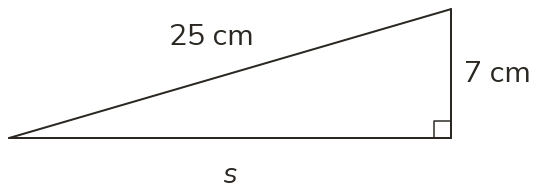
Yes.25² − 7² = 625 − 49 = 576, and √576 = 24 cm.
Not quite. A shorter side can't be longer than 25. Subtract: 25² − 7².
Not quite.576 is s². Square root it: √576 = 24 cm.
Not quite. Square first, then subtract: 25² − 7² = 576.
Find s to 1 d.p.
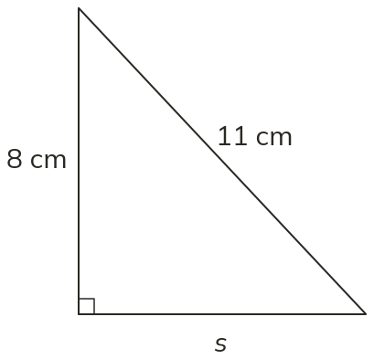
Not quite. A shorter side can't be longer than 11. Subtract: 11² − 8².
Not quite.57 is s². Square root it: √57 = 7.5 cm.
Not quite. Square first, then subtract: 11² − 8² = 57.
Yes.11² − 8² = 121 − 64 = 57, and √57 = 7.5 cm.
04
Practise
mark as you go
Checkpoint. A right-angled triangle has hypotenuse 26 cm and one shorter side 10 cm. Find the other side. Then find it when the hypotenuse is 14 cm and one shorter side is 9 cm, to 1 d.p.Show your teacher before you go on
1
The hypotenuse is 50 cm and one shorter side is 14 cm. Find the other side.
s² = 50² - 14² = 2500 - 196 = 2304 s = √2304 = 48 cm
2
The hypotenuse is 13 cm and one shorter side is 6 cm. Find the other side to 1 d.p.
s² = 169 - 36 = 133 s = √133 = 11.532... = 11.5 cm
3
Find s to 1 d.p.
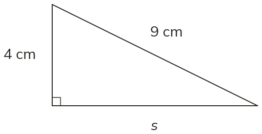
s² = 81 - 16 = 65 s = √65 = 8.062... = 8.1 cm
4
The hypotenuse is 6.5 m and one shorter side is 2.5 m. Find the other side.
s² = 42.25 - 6.25 = 36 s = √36 = 6 m
5
The hypotenuse is 20 cm and one shorter side is 15.5 cm. Find the other side to 1 d.p.
s² = 400 - 240.25 = 159.75 s = √159.75 = 12.639... = 12.6 cm
EXT
In a right-angled triangle one shorter side is twice the other, and the hypotenuse is 10 cm. Find the two shorter sides to 1 d.p.
a² + (2a)² = 100, so 5a² = 100 and a² = 20 a = 4.472... = 4.5 cm; 2a = 8.944... = 8.9 cm
05
Learn
Read each card, then follow the worked examples one step at a time.
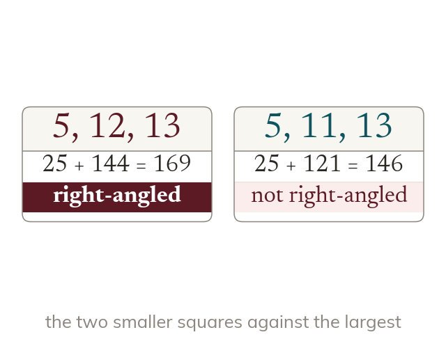
A test, not a calculation
To test whether a triangle is right-angled, square all three sides. It is right-angled exactly when the two smaller squares add to the largest.
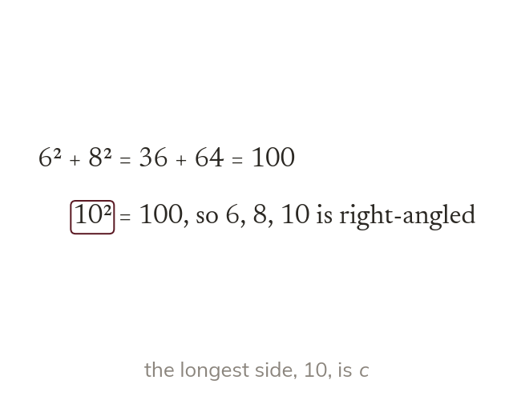
The longest side is c
The longest side is always the one tested as c. Testing a shorter side as c gives the wrong verdict.
The longest side is always the one tested as c. Testing with a shorter side as c makes a right-angled triangle look as if it is not.
WORKED EXAMPLE C
Is a triangle with sides 8 cm, 15 cm and 17 cm right-angled?
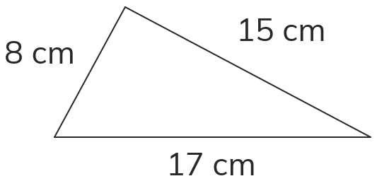
Square the shorter two8² + 15² = 64 + 225
= 289
Square the longest17² = 289
Right-angledYes, as 289 = 289
WORKED EXAMPLE D
Is a triangle with sides 7 cm, 9 cm and 12 cm right-angled?
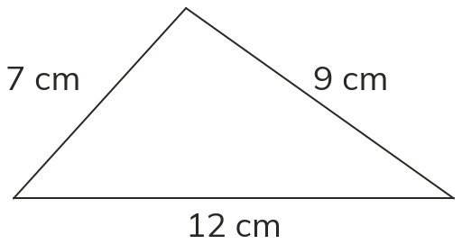
Square the shorter two7² + 9² = 49 + 81
= 130
Square the longest12² = 144
Right-angledno, as 130 is not 144
YOUR TURN · c
Is a triangle with sides 20 cm, 21 cm and 29 cm right-angled?
400 + 441 = 841 = 29², so yes
YOUR TURN · d
A triangle has sides 26 cm, 10 cm and 24 cm. Is it right-angled?
26 is the longest: 100 + 576 = 676 = 26², so yes
06
Check your understanding
Pick an answer. If it's wrong, the feedback tells you which mistake it was.
Is a triangle with sides 9 cm, 12 cm and 15 cm right-angled?
Not quite. The longest side, 15, must be c. Test 9² + 12² against 15².
Not quite. Square first: 9² + 12² against 15².
Not quite. Use the longest side as c: 9² + 12² = 15².
Is a triangle with sides 5 cm, 6 cm and 8 cm right-angled?
Not quite. The longest side, 8, must be c. Test 5² + 6² against 8².
Yes.5² + 6² = 61, but 8² = 64, so it's not right-angled.
Not quite. Square first, and "close" isn't enough. Test 5² + 6² against 8².
Not quite. The longest side, 8, must be c. Test 5² + 6² against 8².
A triangle has sides 24 cm, 7 cm and 25 cm. Which test is right?
Not quite. The longest side, 25, must be c: 7² + 24² = 25².
Not quite. Square first, then compare: 7² + 24² = 25².
Not quite. The longest side, 25, must be c: 7² + 24² = 25².
Yes. The two shorter sides squared add to the longest squared: 49 + 576 = 625.
07
Practise
mark as you go
Checkpoint. Is a triangle with sides 12 cm, 35 cm and 37 cm right-angled? Then test a triangle with sides 10 cm, 13 cm and 16 cm.Show your teacher before you go on
1
Is a triangle with sides 11 cm, 60 cm and 61 cm right-angled?
11² + 60² = 121 + 3600 = 3721 61² = 3721, so yes
2
Is a triangle with sides 6 cm, 7 cm and 9 cm right-angled?
6² + 7² = 36 + 49 = 85 9² = 81, so no
3
Is a triangle with sides 1.5 m, 2 m and 2.5 m right-angled?
1.5² + 2² = 2.25 + 4 = 6.25 2.5² = 6.25, so yes
4
Is a triangle with sides 65 cm, 33 cm and 56 cm right-angled?
Longest is 65: 33² + 56² = 1089 + 3136 = 4225 65² = 4225, so yes
5
Is a triangle with sides 10 cm, 24 cm and 25 cm right-angled?
10² + 24² = 100 + 576 = 676 25² = 625, so no
EXT
A triangle has sides 28 cm, 45 cm and x cm. Find both values of x that make it right-angled, to 1 d.p. where needed.
x the hypotenuse: x² = 784 + 2025 = 2809, so x = 53 45 the hypotenuse: x² = 2025 - 784 = 1241, so x = 35.227... = 35.2
08
Exit ticket
On paper, on your own, then check
1
When the hypotenuse is known, do you add or subtract the squares to find a shorter side, and how do you check the answer?
Subtract; the shorter side must be smaller than the hypotenuse
2
The hypotenuse is 15 cm and one shorter side is 9 cm. Find the other side.
225 - 81 = 144 √144 = 12 cm
3
Is a triangle with sides 9 cm, 40 cm and 41 cm right-angled?
81 + 1600 = 1681 41² = 1681, so yes
Finished? Next lesson: 10.9.3 Pythagoras in Context.
Practise more
After the lesson, or whenever you want more
Dr Frost
Log in, then search for a code to practise that skill.
288bUse Pythagoras' theorem to calculate a shorter side of a right-angled triangle.
288cDetermine if a triangle is right-angled or if it is possible to construct (converse of Pythagoras' theorem).